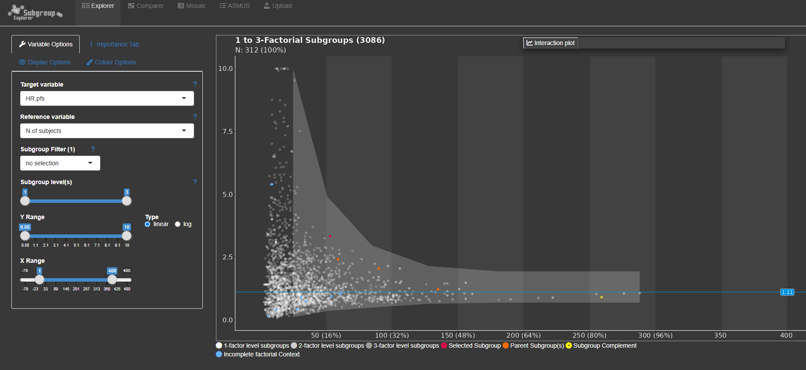

The Subgroup Explorer enables intuitive investigation of treatment effects across patient populations, helping teams uncover patterns that may be hidden within overall study results. Through interactive visualizations and flexible filtering, users can examine whether the observed study outcome is consistently reflected across different subsets of participants or influenced by specific groups. The application highlights where treatment benefits appear particularly pronounced and supports exploration of factors associated with favorable outcomes. At the same time, safety data can be assessed across key demographic and clinical characteristics to identify populations with distinct risk-benefit profiles. By revealing trends across regions, sites, sex, and other variables, the tool helps explain variability in study findings and supports deeper interpretation of results. These insights can inform data-driven discussions, generate new hypotheses, and guide strategic planning for future research. The Subgroup Explorer also assists in identifying patient populations that may be especially relevant for enrichment strategies in subsequent study phases. Overall, it transforms subgroup analyses into an interactive and collaborative experience, enabling faster and more confident decision-making.